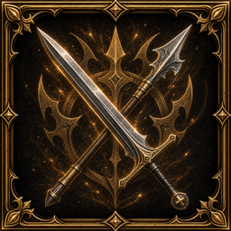
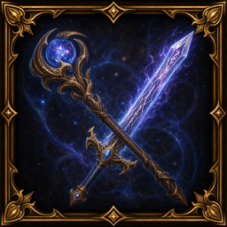
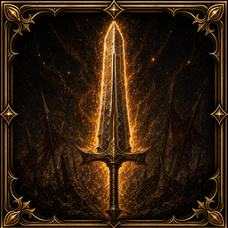
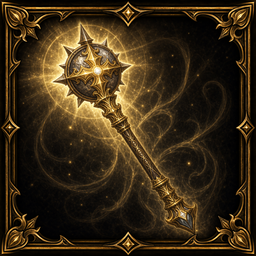
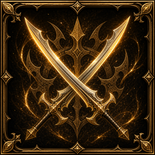
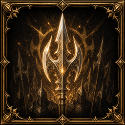
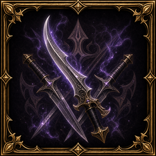
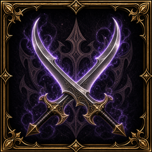
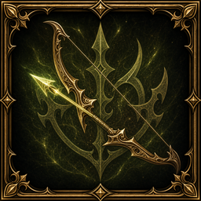
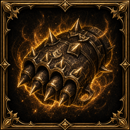

Меч
Мастерство меча
Кузнец войны / Мститель / Паладин / Рыцарь Шилен / Храмовый рыцарь / Воин T1 / Ремесленник T1 / Рыцарь T1 / Рыцарь Палуса T1 / Светлый рыцарь T1 / Воин (люди T0) / Воин (орки T0) / Воин (тёмные эльфы T0) / Воин (эльфы T0): меч +6%

Маг. меч
Мастерство магического меча
Заклинатель бури / Колдун / Некромант / Певец заклинаний / Призрачный призыватель / Призыватель стихий / Чародей / Маг T1 / Светлый маг T1 / Тёмный маг T1: маг. меч +6% (только magical/hybrid)

Двуручный меч
Мастерство двуручного меча
Разрушитель / Налётчик T1: двуручный меч +6%

Дубина/булава / парное дробящее
Мастерство дробящего
Варкрайер / Властитель / Епископ / Заклинатель бури / Колдун / Кузнец войны / Мститель / Некромант / Паладин / Певец заклинаний / Призрачный призыватель / Призыватель стихий / Пророк / Рыцарь Шилен / Старейшина / Старейшина Шилен / Храмовый рыцарь / Чародей / Клерик T1 / Маг T1 / Оракул T1 / Оракул Шилен T1 / Ремесленник T1 / Рыцарь T1 / Рыцарь Палуса T1 / Светлый маг T1 / Светлый рыцарь T1 / Тёмный маг T1 / Шаман орков T1 / Воин (гномы T0) / Воин (люди T0) / Воин (орки T0) / Мистик (люди T0) / Мистик (тёмные эльфы T0) / Мистик (эльфы T0) / Шаман (орки T0): дубина/булава / парное дробящее +6%

Парные мечи
Мастерство парных мечей
Гладиатор / Танцор клинка / Воин T1 / Рыцарь Палуса T1: парные мечи +6%

Древковое
Мастерство древкового
Полководец / Воин T1: древковое +6%

Кинжал
Мастерство кинжала
Искатель сокровищ / Охотник за головами / Певец меча / Следопыт / Странник бездны / Разбойник T1 / Разведчик T1 / Светлый рыцарь T1 / Собиратель T1 / Убийца T1: кинжал +6%

Парные кинжалы
Мастерство парных кинжалов
Искатель сокровищ / Охотник за головами / Певец меча / Следопыт / Странник бездны / Разбойник T1 / Разведчик T1 / Светлый рыцарь T1 / Собиратель T1 / Убийца T1: парные кинжалы +6%

Лук
Мастерство лука
Призрачный рейнджер / Серебряный рейнджер / Стрелок / Разбойник T1 / Разведчик T1 / Убийца T1: лук +6%

Кастеты
Мастерство кулака
Тиран / Монах T1: кастеты +6%